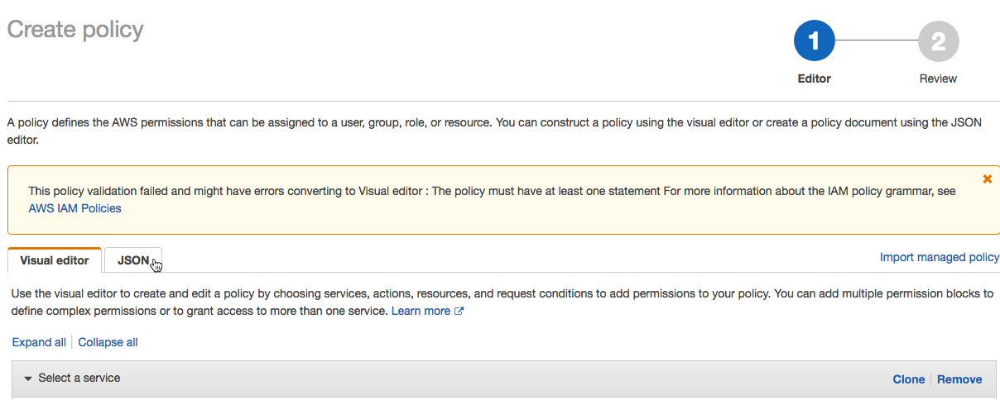
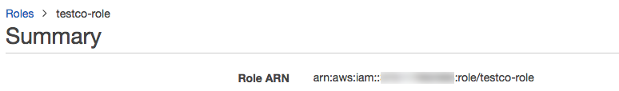

Deliver and access billable usage logs
Preview
This feature is in Public Preview.
As a Databricks account admin, you can configure daily delivery of billable usage logs in CSV file format to an AWS S3 storage bucket, where you can make the data available for usage analysis. Databricks delivers a separate CSV file for each workspace in your account. This CSV file includes historical data about the workspace’s cluster usage in Databricks Units (DBUs), sortable by cluster ID, billing SKU, cluster creator, cluster tags, and more. For a description of each CSV file column, see CSV file schema.
To use an API to download the billable usage logs without configuring log delivery, see Return billable usage logs.
Account admins can view usage in graph or table form on the Usage page in the account console. That page also includes a usage chart that displays account usage in DBUs, grouped by workload type, and allows you to directly download usage data in CSV format.
If your account is on another version of the platform, account owners can view usage on the legacy account console’s Usage Overview tab.
You can optionally deliver logs to an AWS account other than the account used for the IAM role that you create for log delivery. This allows flexibility, for example setting up workspaces from multiple AWS accounts to deliver to the same S3 bucket. This option requires that you configure an S3 bucket policy that references a cross-account IAM role. Instructions and a policy template are provided in this article.
Account owner and account admin access to the logs depends on how you set up the S3 bucket. Databricks delivers logs to your S3 bucket with AWS’s built-in BucketOwnerFullControl Canned ACL so that account owners and designees can download the logs directly. To support bucket ownership for newly-created objects, you must set your bucket’s S3 Object Ownership setting to the value Bucket owner preferred.
Important
If instead you set your bucket’s S3 Object Ownership setting to Object writer, new objects such as your logs remain owned by the uploading account, which is by default the IAM role you created and specified to access your bucket. This can make it difficult to access the logs, because you cannot access them from the AWS console or automation tools that you authenticated with as the bucket owner.
Databricks recommends that you review Security Best Practices for S3 for guidance around protecting the data in your bucket from unwanted access.
In addition to delivery of logs for running workspaces, logs are delivered for cancelled workspaces to ensure that logs are properly delivered that represent the final day of the workspace.
Configuration options
When you configure billable usage log delivery, you have the following options if you have multiple workspaces in your account:
Share the same configuration (log delivery S3 bucket and IAM role) for all workspaces in the account. This is the default.
Use separate configurations for each workspace in the account.
Use separate configurations for different groups of workspaces, each sharing a configuration.
Note
Even though you use the Account API to configure log delivery, you can configure log delivery with any workspace, including workspaces that were not created using the Account API.
High-level flow
The high-level flow of billable usage log delivery:
Configure storage: In AWS, create a new AWS S3 bucket. Using Databricks APIs, call the Account API to create a storage configuration object that uses the bucket name.
Note
To deliver logs to an AWS account other than the account used for the IAM role that you create for log delivery, you need to add an S3 bucket policy. You do not add the policy in this step, but in a later one.
Configure credentials: In AWS, create the appropriate AWS IAM role. Using Databricks APIs, call the Account API to create a credentials configuration object that uses the IAM role’s ARN. The role policy can specify a path prefix for log delivery within your S3 bucket. You can choose to define an IAM role to include multiple path prefixes if you want log delivery configurations for different workspaces that share the S3 bucket but use different path prefixes.
Optional cross-account support To deliver logs to an AWS account other than the account of the IAM role that you create for log delivery, add an S3 bucket policy. This policy references IDs for the cross-account IAM role that you created in the previous step.
Call the log delivery API: Call the Account API to create a log delivery configuration that uses the credential and storage configuration objects from previous steps. This step lets you specify if you want to associate the log delivery configuration for whole account (current and future workspaces) or for a specific set of workspaces.
Access the CSV files for analysis: The delivery location is
<bucket-name>/<prefix>/billable-usage/csv/, where<prefix>is the name of the optional delivery path prefix you set up during log delivery configuration. Files are namedworkspaceId=<workspace-id>-usageMonth=<month>.csv. Files are delivered daily by overwriting the month’s CSV file for each workspace. You can import this data into Databricks for analysis. There is also a sample notebook that you can use to run a usage analysis dashboard based on these CSV files. See Analyze usage data in Databricks.
Important
There is a limit on the number of log delivery configurations that you can create for an account. You can create a maximum of two enabled configurations that use the account level (no workspace filter) and two enabled configurations for every specific workspace (a workspaceId can occur in the workspace filter for two configurations). You cannot delete a log delivery configuration, but you can disable it. You can re-enable a disabled configuration, but the request fails if it violates the limits previously described.
Requirements
You must be an account admin
Account ID. You can find the account ID in the account console.
How to authenticate to the Account API
To authenticate to the Account API, you can use Databricks OAuth for service principals, Databricks OAuth for users, or a Databricks account admin’s username and password. Databricks strongly recommends that you use Databricks OAuth for users or service principals. A service principal is an identity that you create in Databricks for use with automated tools, jobs, and applications. To create an OAuth token, see Authentication using OAuth for service principals.
Use the following examples to authenticate to a Databricks account. You can use OAuth for service principals, OAuth for users, or a user’s username and password (legacy). For background, see:
For OAuth for service principals, see OAuth machine-to-machine (M2M) authentication.
For OAuth for users, see OAuth user-to-machine (U2M) authentication.
For a user’s username and password (legacy), see Basic authentication (legacy).
For authentication examples, choose from the following:
Install Databricks CLI version 0.205 or above. See Install or update the Databricks CLI.
Complete the steps to configure OAuth M2M authentication for service principals in the account. See OAuth machine-to-machine (M2M) authentication.
Identify or manually create a Databricks configuration profile in your
.databrickscfgfile, with the profile’s fields set correctly for the relatedhost,account_id, andclient_idandclient_secretmapping to the service principal. See OAuth machine-to-machine (M2M) authentication.Run your target Databricks CLI command, where
<profile-name>represents the name of the configuration profile in your.databrickscfgfile:databricks account <command-name> <subcommand-name> -p <profile-name>
For example, to list all users in the account:
databricks account users list -p MY-AWS-ACCOUNT
For a list of available account commands, run the command
databricks account -h.For a list of available subcommands for an account command, run the command
databricks account <command-name> -h.
Install Databricks CLI version 0.205 or above. See Install or update the Databricks CLI.
Complete the steps to configure OAuth U2M authentication for users in the account. See OAuth user-to-machine (U2M) authentication.
Start the user authentication process by running the following Databricks CLI command:
databricks auth login --host <account-console-url> --account-id <account-id>
For example:
databricks auth login --host https://accounts.cloud.databricks.com --account-id 00000000-0000-0000-0000-000000000000
Note
If you have an existing Databricks configuration profile with the
hostandaccount_idfields already set, you can substitute--host <account-console-url> --account-id <account-id>with--profile <profile-name>.Follow the on-screen instructions to have the Databricks CLI automatically create the related Databricks configuration profile in your
.databrickscfgfile.Continue following the on-screen instructions to sign in to your Databricks account through your web browser.
Run your target Databricks CLI command, where
<profile-name>represents the name of the configuration profile in your.databrickscfgfile:databricks account <command-name> <subcommand-name> -p <profile-name>
For example, to list all users in the account:
databricks account users list -p ACCOUNT-00000000-0000-0000-0000-000000000000
For a list of available account commands, run the command
databricks account -h.For a list of available subcommands for an account command, run the command
databricks account <command-name> -h.
Install Databricks CLI version 0.205 or above. See Install or update the Databricks CLI.
Identify or manually create a Databricks configuration profile in your
.databrickscfgfile, with the profile’s fields set correctly for the relatedhost,account_id, andusernameandpasswordmapping to your Databricks user account. See Basic authentication (legacy).Run your target Databricks CLI command, where
<profile-name>represents the name of the configuration profile in your.databrickscfgfile:databricks account <command-name> <subcommand-name> -p <profile-name>
For example, to list all users in the account:
databricks account users list -p MY-AWS-ACCOUNT
For a list of available account commands, run the command
databricks account -h.For a list of available subcommands for an account command, run the command
databricks account <command-name> -h.
Step 1: Configure storage
Databricks delivers the billable usage data to an S3 bucket in your account. You can configure multiple workspaces to use a single S3 bucket, or you can define different workspaces (or groups of workspaces) to use different buckets.
This procedure describes how to set up a single configuration object with a common configuration for one or more workspaces in the account. To use different storage locations for different workspaces, repeat the procedures in this article for each workspace or group of workspaces.
Create the S3 bucket, following the instructions in Step 1: Configure audit log storage.
Important
To deliver logs to an AWS account other than the one used for your Databricks workspace, you must add an S3 bucket policy. You do not add the bucket policy in this step. See Step 3: Optional cross-account support.
Create a Databricks storage configuration record that represents your new S3 bucket. Specify your S3 bucket by calling the create new storage configuration API (
POST /accounts/<account-id>/storage-configurations).Pass the following:
storage_configuration_name— New unique storage configuration name.root_bucket_info— A JSON object that contains abucket_namefield that contains your S3 bucket name.
Copy the
storage_configuration_idvalue returned in the response body. You will use it to create the log delivery configuration in a later step.For example:
curl -X POST 'https://accounts.cloud.databricks.com/api/2.0/accounts/<databricks-account-id>/storage-configurations' \ --header 'Authorization: Bearer $OAUTH_TOKEN' \ -d '{ "storage_configuration_name": "databricks-workspace-storageconf-v1", "root_bucket_info": { "bucket_name": "my-company-example-bucket" } }'
Response:
{ "storage_configuration_id": "<databricks-storage-config-id>", "account_id": "<databricks-account-id>", "root_bucket_info": { "bucket_name": "my-company-example-bucket" }, "storage_configuration_name": "databricks-workspace-storageconf-v1", "creation_time": 1579754875555 }
Step 2: Configure credentials
This procedure describes how to set up a single configuration object with a common configuration for one or more workspaces in the account. To use different credentials for different workspaces, repeat the procedures in this article for each workspace or group of workspaces.
Note
To use different S3 bucket names, you need to create separate IAM roles.
Log into your AWS Console as a user with administrator privileges and go to the IAM service.
Click the Roles tab in the sidebar.
Click Create role.
In Select type of trusted entity, click AWS service.
In Common Use Cases, click EC2.
Click the Next: Permissions button.
Click the Next: Tags button.
Click the Next: Review button.
In the Role name field, enter a role name.

Click Create role. The list of roles displays.
In the list of roles, click the role you created.
Add an inline policy.
On the Permissions tab, click Add inline policy.

In the policy editor, click the JSON tab.
Copy this access policy and modify it. Replace the following values in the policy with your own configuration values:
<s3-bucket-name>: The bucket name of your AWS S3 bucket.<s3-bucket-path-prefix>: (Optional) The path to the delivery location in the S3 bucket. If unspecified, the logs are delivered to the root of the bucket. This path must match thedelivery_path_prefixargument when you call the log delivery API.
{ "Version":"2012-10-17", "Statement":[ { "Effect":"Allow", "Action":[ "s3:GetBucketLocation" ], "Resource":[ "arn:aws:s3:::<s3-bucket-name>" ] }, { "Effect":"Allow", "Action":[ "s3:PutObject", "s3:GetObject", "s3:DeleteObject", "s3:PutObjectAcl", "s3:AbortMultipartUpload" ], "Resource":[ "arn:aws:s3:::<s3-bucket-name>/<s3-bucket-path-prefix>/", "arn:aws:s3:::<s3-bucket-name>/<s3-bucket-path-prefix>/*" ] }, { "Effect":"Allow", "Action":[ "s3:ListBucket", "s3:ListMultipartUploadParts", "s3:ListBucketMultipartUploads" ], "Resource":"arn:aws:s3:::<s3-bucket-name>", "Condition":{ "StringLike":{ "s3:prefix":[ "<s3-bucket-path-prefix>", "<s3-bucket-path-prefix>/*" ] } } } ] }
You can customize the policy use of the path prefix:
If you do not want to use the bucket path prefix, remove
<s3-bucket-path-prefix>/(including the final slash) from the policy each time it appears.If you want log delivery configurations for different workspaces that share the S3 bucket but use different path prefixes, you can define an IAM role to include multiple path prefixes. There are two separate parts of the policy that reference
<s3-bucket-path-prefix>. In each case, duplicate the two adjacent lines that reference the path prefix. Repeat each pair of lines for every new path prefix, for example:
{ "Resource":[ "arn:aws:s3:::<mybucketname>/field-team/", "arn:aws:s3:::<mybucketname>/field-team/*", "arn:aws:s3:::<mybucketname>/finance-team/", "arn:aws:s3:::<mybucketname>/finance-team/*" ] }
Click Review policy.
In the Name field, enter a policy name.
Click Create policy.
If you use service control policies to deny certain actions at the AWS account level, ensure that
sts:AssumeRoleis whitelisted so Databricks can assume the cross-account role.
On the role summary page, click the Trust Relationships tab.
Paste this access policy into the editor and replace the following values in the policy with your own configuration values:
<databricks-account-id>: Your Databricks account ID.{ "Version":"2012-10-17", "Statement":[ { "Effect":"Allow", "Principal":{ "AWS":"arn:aws:iam::414351767826:role/SaasUsageDeliveryRole-prod-IAMRole-3PLHICCRR1TK" }, "Action":"sts:AssumeRole", "Condition":{ "StringEquals":{ "sts:ExternalId":[ "<databricks-account-id>" ] } } } ] }
In the role summary, copy the Role ARN and save it for a later step.
Create a Databricks credentials configuration ID for your AWS role. Call the Create credential configuration API (
POST /accounts/<account-id>/credentials). This request establishes cross-account trust and returns a reference ID to use when you create a new workspace.Replace
<account-id>with your Databricks account ID. In the request body:Set
credentials_nameto a name that is unique within your account.Set
aws_credentialsto an object that contains ansts_roleproperty. That object must specify therole_arnfor the role you’ve created.
The response body will include a
credentials_idfield, which is the Databricks credentials configuration ID that you need to create the new workspace. Copy this field so you can use it to create the log delivery configuration in a later step.For example:
curl -X POST 'https://accounts.cloud.databricks.com/api/2.0/accounts/<databricks-account-id>/credentials' \ --header 'Authorization: Bearer $OAUTH_TOKEN' \ -d '{ "credentials_name": "databricks-credentials-v1", "aws_credentials": { "sts_role": { "role_arn": "arn:aws:iam::<aws-account-id>:role/my-company-example-role" } } }'
Example response:
{ "credentials_id": "<databricks-credentials-id>", "account_id": "<databricks-account-id>", "aws_credentials": { "sts_role": { "role_arn": "arn:aws:iam::<aws-account-id>:role/my-company-example-role", "external_id": "<databricks-account-id>" } }, "credentials_name": "databricks-credentials-v1", "creation_time": 1579753556257 }
Copy the
credentials_idfield from the response for later use.
Step 3: Optional cross-account support
If your S3 bucket is in the same AWS account as the IAM role used for log delivery, skip this step.
To deliver logs to an AWS account other than the account used for the IAM role that you create for log delivery, add the S3 bucket policy shown below. This policy references IDs for the cross-account IAM role that you created in the previous step.
In the AWS Console, go to the S3 service.
Click the bucket name.
Click the Permissions tab.
Click the Bucket Policy button.
Copy and modify this bucket policy.
Replace
<s3-bucket-name>with the S3 bucket name. Replace<customer-iam-role-id>with the role ID of your newly-created IAM role. Replace<s3-bucket-path-prefix>with the bucket path prefix you want. See the notes after the policy sample for information about customizing the path prefix.{ "Version": "2012-10-17", "Statement": [ { "Effect": "Allow", "Principal": { "AWS": ["arn:aws:iam::<customer-iam-role-id>"] }, "Action": "s3:GetBucketLocation", "Resource": "arn:aws:s3:::<s3-bucket-name>" }, { "Effect": "Allow", "Principal": { "AWS": "arn:aws:iam::<customer-iam-role-id>" }, "Action": [ "s3:PutObject", "s3:GetObject", "s3:DeleteObject", "s3:PutObjectAcl", "s3:AbortMultipartUpload", "s3:ListMultipartUploadParts" ], "Resource": [ "arn:aws:s3:::<s3-bucket-name>/<s3-bucket-path-prefix>/", "arn:aws:s3:::<s3-bucket-name>/<s3-bucket-path-prefix>/*" ] }, { "Effect": "Allow", "Principal": { "AWS": "arn:aws:iam::<customer-iam-role-id>" }, "Action": "s3:ListBucket", "Resource": "arn:aws:s3:::<s3-bucket-name>", "Condition": { "StringLike": { "s3:prefix": [ "<s3-bucket-path-prefix>", "<s3-bucket-path-prefix>/*" ] } } } ] }
You can customize the policy use of the path prefix:
If you do not want to use the bucket path prefix, remove
<s3-bucket-path-prefix>/(including the final slash) from the policy each time it appears.If you want log delivery configurations for multiple workspaces that share the same S3 bucket but use different path prefixes, you can define an IAM role to include multiple path prefixes. Two parts of the policy reference
<s3-bucket-path-prefix>. In each place, duplicate the two adjacent lines that reference the path prefix. Repeat each pair of lines for each new path prefix. For example:{ "Resource":[ "arn:aws:s3:::<mybucketname>/field-team/", "arn:aws:s3:::<mybucketname>/field-team/*", "arn:aws:s3:::<mybucketname>/finance-team/", "arn:aws:s3:::<mybucketname>/finance-team/*" ] }
Step 4: Call the log delivery API
To configure log delivery, call the Log delivery configuration API (POST /accounts/<account-id>/log-delivery).
You need the following values that you copied in the previous steps:
credentials_id: Your Databricks credential configuration ID, which represents your cross-account role credentials.storage_configuration_id: Your Databricks storage configuration ID, which represents your root S3 bucket.
Also set the following fields:
log_type: Always set toBILLABLE_USAGE.output_format: Always set toCSV. For details of the CSV file format, see Billable usage log schema.delivery_path_prefix: (Optional) Set to the path prefix. This must match the path prefix that you used in your role policy.workspace_ids_filter: (Optional) By default, this log configuration applies to all workspaces associated with your account ID. For some types of deployments there is only one workspace per account ID so this field is unnecessary. If your account was created originally for workspace creation with the Account API, you may have multiple workspaces associated with your account ID. You can optionally set this field to array of workspace IDs that this configuration applies to. If you plan to use different log delivery configurations for different workspaces, set this explicitly rather than leaving it blank. If you leave this blank and your account ID is associated in the future with additional workspaces, this configuration also applies to the new workspaces. A workspace might apply to more than one log delivery configuration, in which case the logs are written to multiple locations.Important
There is a limit on the number of log delivery configurations that you can create for an account. You can create a maximum of two enabled configurations that use the account level (no workspace filter) and two enabled configurations for every specific workspace (a
workspaceIdcan occur in the workspace filter for two configurations). You cannot delete a log delivery configuration, but you can disable it. You can re-enable a disabled configuration, but the request fails if it violates the limits previously described.delivery_start_time: (Optional) The month and year at which log delivery starts. Defaults to current month. Format is text inYYYY-MMformat. You can enter any month and year from 2019-03 on.
For example:
curl -X POST
'https://accounts.cloud.databricks.com/api/2.0/accounts/<databricks-account-id>/log-delivery' \
--header 'Authorization: Bearer $OAUTH_TOKEN' \
-d '{
"log_delivery_configuration": {
"log_type": "BILLABLE_USAGE",
"config_name": "billable usage config",
"output_format": "CSV",
"credentials_id": "<databricks-credentials-id>",
"storage_configuration_id": "<databricks-storage-config-id>",
"delivery_path_prefix": "usage-data",
"delivery_start_time": "2020-06",
"workspace_ids_filter": [
6383650456894062,
4102272838062927
]
}
}'
Example response:
{
"log_delivery_configuration": {
"config_id": "<config-id>",
"config_name": "billable usage config",
"log_type": "BILLABLE_USAGE",
"output_format": "CSV",
"account_id": "<account-id>",
"credentials_id": "<databricks-credentials-id>",
"storage_configuration_id": "<databricks-storage-config-id>",
"workspace_ids_filter": [
6383650456894062,
4102272838062927
],
"delivery_path_prefix": "usage-data",
"delivery_start_time": "2020-06",
"status": "ENABLED",
"creation_time": 1591638409000,
"update_time": 1593108904000,
"log_delivery_status": {
"status": "CREATED",
"message": "Log Delivery Configuration is successfully created. Status will be updated after the first delivery attempt."
}
}
}
Additional features of the log delivery APIs
The log delivery APIs have additional features. See the API reference documentation for details.
Additional operations include:
Log delivery configuration status can be found in the API response’s log_delivery_status object. With log_delivery_status, you can check the status (success or failure) and the last time of an attempt or successful delivery.
Important
There is a limit on the number of log delivery configurations that you can create for an account. You can create a maximum of two enabled configurations that use the account level (no workspace filter) and two enabled configurations for every specific workspace (a workspaceId can occur in the workspace filter for two configurations). You cannot delete a log delivery configuration, but you can disable it. You can re-enable a disabled configuration, but the request fails if it violates the limits previously described.
Step 5: Access the log files for analysis
Log files are delivered to <bucket-name>/<prefix>/billable-usage/csv/, where <prefix> is the name of the optional delivery path prefix you set up during log delivery configuration. Files are named workspaceId=<workspace-id>-usageMonth=<month>.csv. Files are delivered daily by overwriting the month’s CSV file for each workspace.
For the CSV schema, see CSV file schema
For information about how to analyze these files using Databricks, see Analyze usage data in Databricks
Automated configuration using Terraform
You can use Databricks Terraform provider to configure usage log delivery automatically with the help of the databricks_mws_log_delivery resource. Here’s an end-to-end example of usage and audit log delivery:
variable "databricks_account_id" {
description = "Account ID. You can get your account ID in the bottom left corner of the account console. See https://accounts.cloud.databricks.com"
}
resource "aws_s3_bucket" "logdelivery" {
bucket = "${var.prefix}-logdelivery"
acl = "private"
versioning {
enabled = false
}
force_destroy = true
tags = merge(var.tags, {
Name = "${var.prefix}-logdelivery"
})
}
resource "aws_s3_bucket_public_access_block" "logdelivery" {
bucket = aws_s3_bucket.logdelivery.id
ignore_public_acls = true
}
data "databricks_aws_assume_role_policy" "logdelivery" {
external_id = var.databricks_account_id
for_log_delivery = true
}
resource "aws_iam_role" "logdelivery" {
name = "${var.prefix}-logdelivery"
description = "(${var.prefix}) UsageDelivery role"
assume_role_policy = data.databricks_aws_assume_role_policy.logdelivery.json
tags = var.tags
}
data "databricks_aws_bucket_policy" "logdelivery" {
full_access_role = aws_iam_role.logdelivery.arn
bucket = aws_s3_bucket.logdelivery.bucket
}
resource "aws_s3_bucket_policy" "logdelivery" {
bucket = aws_s3_bucket.logdelivery.id
policy = data.databricks_aws_bucket_policy.logdelivery.json
}
resource "databricks_mws_credentials" "log_writer" {
account_id = var.databricks_account_id
credentials_name = "Usage Delivery"
role_arn = aws_iam_role.logdelivery.arn
}
resource "databricks_mws_storage_configurations" "log_bucket" {
account_id = var.databricks_account_id
storage_configuration_name = "Usage Logs"
bucket_name = aws_s3_bucket.logdelivery.bucket
}
resource "databricks_mws_log_delivery" "usage_logs" {
account_id = var.databricks_account_id
credentials_id = databricks_mws_credentials.log_writer.credentials_id
storage_configuration_id = databricks_mws_storage_configurations.log_bucket.storage_configuration_id
delivery_path_prefix = "billable-usage"
config_name = "Usage Logs"
log_type = "BILLABLE_USAGE"
output_format = "CSV"
}
resource "databricks_mws_log_delivery" "audit_logs" {
account_id = var.databricks_account_id
credentials_id = databricks_mws_credentials.log_writer.credentials_id
storage_configuration_id = databricks_mws_storage_configurations.log_bucket.storage_configuration_id
delivery_path_prefix = "audit-logs"
config_name = "Audit Logs"
log_type = "AUDIT_LOGS"
output_format = "JSON"
}